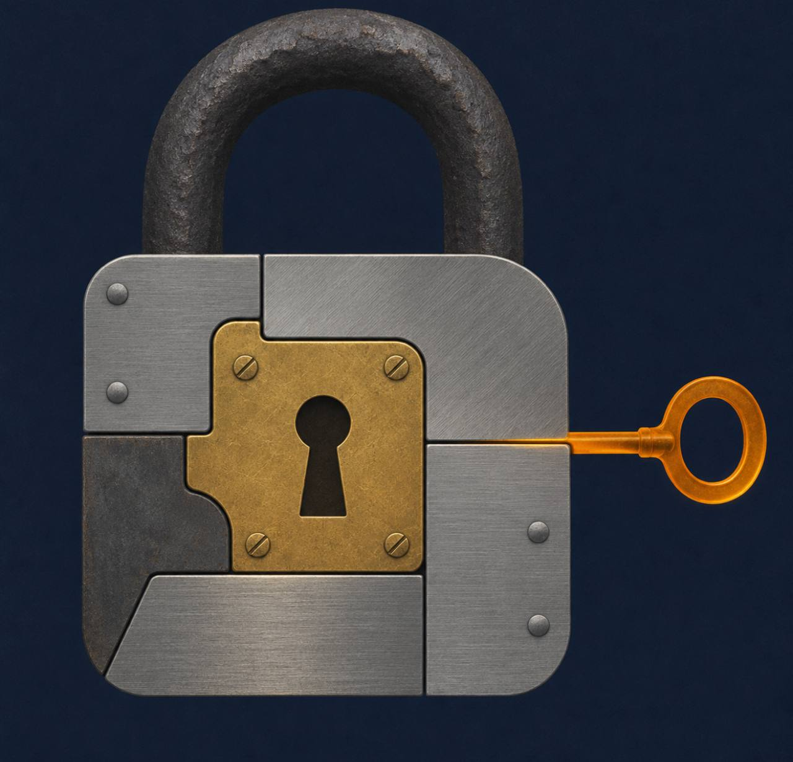

Auth bypass в OpenSSH на musl: пять верных решений сломались на стыке

CVE-2026-123158, раскрыли 5 ноября. Итог пяти отдельных решений 1980–2022 годов, каждое по-своему разумное.
На musl crypt() возвращает "*" для SHA-256/512-хэша длиннее 256 байт, а key-only аккаунты и так хранят "*" в /etc/shadow. По сути, строки совпали, и логин прошёл. Годится любой пароль ~300 символов.
Условия: musl-система (Alpine, OpenWrt, Buildroot, Yocto), sshd без PAM, PasswordAuthentication yes (дефолт) и аккаунт с "*" в shadow.
Фикс: OpenSSH 10.6p2, либо отключить парольный вход и проверить shadow и authorized_keys.
glibc-дистры, PAM и Alpine-контейнеры не задеты. Попытки эксплуатации пошли через 9 часов после раскрытия, атак не подтвердили. Патч первым делом.
Каждое решение было верным само по себе. Ломается на стыках — туда и направьте ревью и интеграционные тесты.
Источники
- https://www.bleepingcomputer.com/news/security/openssh-flaw-lets-attackers-log-into-password-disabled-linux-accounts/
- https://www.helpnetsecurity.com/2026/11/06/openssh-sshole-cve-2026-123158-exploitation/
- https://www.tomshardware.com/tech-industry/cyber-security/combined-flaws-let-anyone-into-alpine-linux-and-other-distros-by-typing-anything-over-256-characters-as-a-password-emergency-fixes-for-openssh-and-musl-libc-issued-for-millions-of-systems-patch-immediately
- https://cycode.com/blog/sshole-cve-2026-123158-openssh-alpine-linux-vulnerability/